충남대학교 컴퓨터공학과 조은선 교수님의 "컴파일러 개론" 강의를 필기한 내용입니다.
다소 잘못된 내용과 구어적 표현 이 포함되어 있을 수 있습니다.
컴파일러 후반부
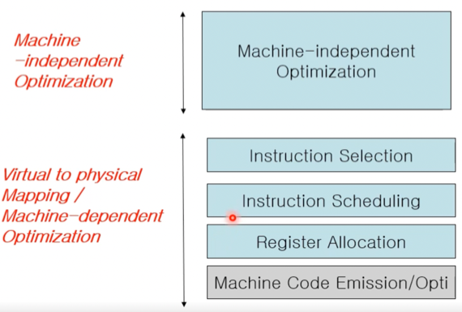
- 컴파일러 후반부는 일단 Acritecture를 신경쓰지 않고 최적화를 하는 Machine-indepentent Optimization를 하고
- 그 다음부터는 Architecture에 대해 신경쓰는 Machine Dependent Processing을 하게 된다더라
Instruction Selection
- Instuction Selection은 트리 형태의 Low-level IR을 보고 트리의 노드 몇개를 묶어 Machine Instruction으로 변환하는 단계이다
- 근데 Architecture마다 Instruction이 다르기 때문에 해당 Architecture에서 지원하는 Instruction을 활용해서 최대한 효율적인 Instruction을 선택하는 것이 중요한 것
- 이따가 예시 보면 알 수 있다
(from tiger book) Tree-IR
- 뭐 Tiger book 이라는 곳에서 소개하는 트리 형태의 IR로 수업에서 설명을 하는데
공간에 접근하거나 공간에서 가져오기
- MEM(e) : 포인터 연산(Reference)
- 그냥 C언어에서 * 연산자라고 똑같이 사용하면 됨
- 즉, 메모리 주소에서 값을 가져오거나 메모리 주소에 값을 넣는 연산
- TEMP(t) : 뭐 레지스터에 대한 Reference연산이라고 생각하면 됨
할당(Assign)
- MOVE(dst, src)
- 오른쪽 자식을 왼쪽 자식에 넣는 명령어
- 그냥 C에서의 = 연산자로 바꿔서 생각하면 된다
- 근데 중요한 것은 Low-level IR에서는 변수나 그딴게 없기 때문에 dst에 무조건 포인터나 레지스터 연산 드가야 한다는 것이다
- 즉, MOVE의 왼쪽 자식은 MEM이나 TEMP가 드가야된다는 소리임
- 따라서 MOVE(MEM(e_dst), MEM(e_src)) 이 코드는 다음과 같다
- e_dst = *e_src
- 근데 C언어에서도 * 연산자를 =의 왼쪽에 사용하면 그 포인터가 가르키는 곳에 넣으라는 의미가 되고(Store) 오른쪽에 사용하면 그 포인터가 가르키는 것을 가져오라는 의미(Fetch)가 되듯이
- MOVE의 왼쪽 자식으로 MEM이 드가면 그 포인터가 가르키는 곳에 값을 넣는 의미가 되고 오른쪽 자식에 들어가게 되면 그 포인터가 가르키는 곳에서 값을 가져오라는 의미가 되는 것
Statement
- SEQ(s1, s2)는 Statement 1을 실행하고 그 상태에서 Statement 2를 실행하라는 의미
- ESEQ(s, e)는 Statement를 실행하고 그 상태에서 Expression을 계산하라는 의미
- 따라서 SEQ의 경우에는 결과값이 나오지 않고 상태만 바뀌지만 ESEQ는 상태가 바뀌고 그 바뀐 상태에서의 결과값이 나오는 것
Binary Operation, Const
- BINOP(o, e1, e2) : e1 결과값과 e2결과값을 o에 따라서 연산하겠다는 것
- 헷갈리지말어라 - 세 자식중에 중간에 opcode가 드가는게 아니고 첫번째에 opcode가 드가게 된다
- CONST(i) : 정수 상수 i
동치관계
- 트리가 다르게 생겨도 같은 일을 하는 동치관계가 존재하고 이걸 이용해서 더 효율적인 트리를 선택할 수 있고 이런식으로 Optimization을 하게 된다
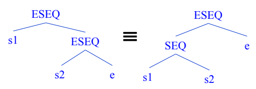
- 딱 읽어보면 동치라는걸 알 수 있을거
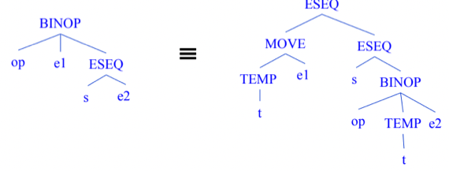
- 이것도 동치인데
- 이건 왼쪽의 트리를 선택하는 경우가 종종 있다 - 저 레지스터에 담긴 값을 자주 써야되는 경우 트리가 좀 복잡해도 그걸 선택하기도 함
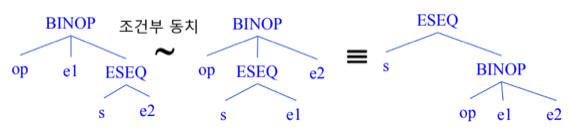
- 이건 조건부 동치임
- 왼쪽과 중간의 트리는 s를 수행함으로 변경되는 상태가 e1에 영향을 준다면 동치가 아니지만 영향을 주지 않는다면 동치가 되는 것
- 당연히 중간과 오른쪽은 동치이다
Instruction Selection
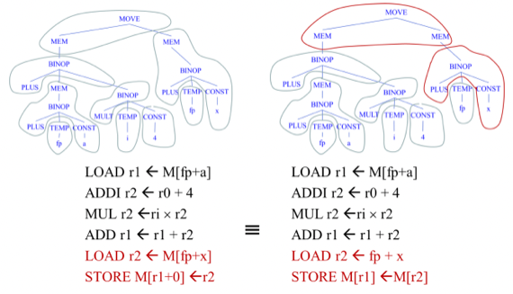
- 그래서 이런 Low-level IR Tree에서 Node들을 모아 하나의 Instruction으로 묶게 되는데
- 왼쪽의 경우에는 Memory-to-Memory STORE를 지원하지 않기 때문에 MOVE와 왼쪽 자식만 묶고 오른쪽 자식은 또 따로 묶어서 Instruction을 구성했다면
- 오른쪽의 경우에는 Memory-to-Memory STORE를 지원해서 MOVE와 두 자식까지 묶어서 instruction을 구성하게 된 것
- Memory-to-Memory STORE를 지원하면 이걸 쓰는게 더 효율적이랜다
Register Allocation
- 옛날에 Low-level IR에서는 레지스터가 무한히 있다고 가정하고 레지스터를 막 가져다가 썼었는데
- 이제는 레지스터의 갯수가 한정되어있기 때문에 각각의 가상 레지스터를 실제 레지스터에 할당해주는 작업이 필요하고
- 이것은 일단 레지스터에 넣을 수 있는때까지 넣고 안되면 Memory로 내리게 된다
- 그래서 일단 처리속도를 최대로 하기 위해 자주 사용되는것들을 Physical register에 매핑하고
- 레지스터가 부족해 Memory로 내리는 것을 Spilling이라고 한다
Graph Coloring
- 일단 이 문제가 지도에 색칠하는 문제와 비슷하다는 것을 이해해야됨
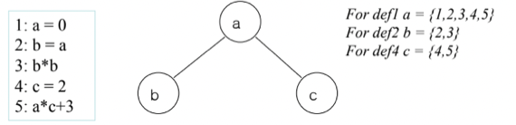
- 봐봐라
- 일단 Live Range라는 것을 알아야 됨 - 이건 어떤 변수가 사용되는(살아있는) 기간(범위)이라고 생각하면 된다
- 그래서 위의 예시의 왼쪽 코드에 대해 각각의 Live Range 를 구해본 것이 오른쪽이다
- 변수 a의 경우에는 0번에서 선언 되고 5번에서 마지막으로 사용되었으므로 Live range가 0~5가 되는거고
- 변수 b의 경우에는 2번에서 선언되고 3번에서 마지막으로 사용되니까 Live range가 2~3이 되며
- 변수 c의 경우에는 4번에서 선언되고 5번에서 마지막으로 사용되기 때문에 Live range가 4~5가 되는 것
- 실제로 컴퓨터에서 Live range를 어떻게 구하는지는 몰라도 된다
- 그리고 Interference라는 것은 두 변수의 Live range가 겹치는 경우에 Interference가 있다고 한다
- 그래서 각 변수를 Node에 적고 Interference관계를 Edge로 표현하면 하나의 그래프가 만들어지고 이 그래프에 대해 Graph coloring을 하면 되는 것이다
- 위 그림에서 가운데 그래프가 그거임
- 이제 좀 왜 레지스터 할당이 그래프 색칠문제로 변환되는지 알것제?
- 그래프에서 인접노드는 Live range가 겹치기 때문에 하나의 레지스터에 할당하면 안됨
- 따라서 인접노드에 대해서는 다른 레지스터에 할당했을때 필요한 레지스터의 갯수를 최소화시켜야만 제한된 레지스터에 최대한 많은 변수를 넣을 수 있게 되는 것
Kempe’s Algorithm
- 그래프 색칠하기 문제에서 굉장히 오래되었고 그만큼 많이 쓰이는 알고리즘임
- 정답이 존재해도 그 정답을 도출해내지 못하는 경우가 있지만 쉽기때문에 컴파일러에서도 쓰인다
Step 1 - Simplify
- 만약 색깔이 k개로 한정되어 있다면 그래프에서 k - 1개의 Edge를 갖는 노드들을 Stack에 넣어준다
- 그래서 과정은 다음과 같음
- 일단 k - 1개의 Edge를 가지는 Node들 중 하나를 Stack에 Push함
- 그리고 Stack에 들어간 Node와 연결된 Edge는 없다고 생각하고 다시 k - 1개의 Edge를 갖는 Node들 중 하나를 골라 Stack에 Push하는 과정을 더이상 드갈게 없을때까지 반복힌디
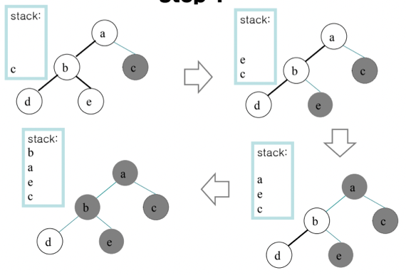
- 예시임
- 여기서 2개의 색으로만 칠한다 했을때
- 첫번째에서 Edge가 1개인 노드는 c, d, e이고 이중 하나인 c를 넣는다
- 그리고 c-a Edge를 제외하고 다시 Edge가 1개인 노드를 다 구해보면 a, d, e이고 이중에 하나인 e를 넣는다
- b-e Edge를 제외하고 Edge가 1개인 노드는 a, d이고 이중에 a를 넣는다
- a-b Edge를 제외하고 Edge가 1개인 노드는 b, d이고 이중에 b를 넣는다
- Node가 하나밖에 안남았으므로 Step 1이 종료됨
Step 2 - Coloring
- 남아있는 노드를 칠하고
- 스택에서 하나씩 꺼내면서 인접한 노드와 다른색깔로 칠해주면 됨
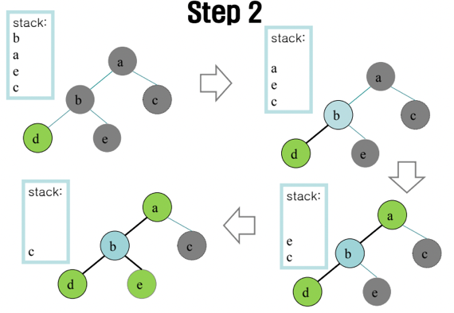
- 위 그림 보면 알 수 있을거임 - Stack에서 하나씩 꺼내면서 색깔을 칠해준다
Spilling
- 위에서도 말했듯이 Kempe’s Algorithm을 사용하면 해가 있음에도 해결하지 못하는 경우가 생기긴 한다
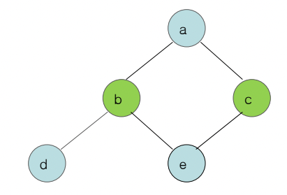
- 이거 보면 d를 Stack에 넣은 뒤에 모든 Node의 Edge가 2개이기 때문에 더이상 진행하지 못하지만 위 그림처럼 정답이 존재한다 - 뭐 이런 해를 구하지 못하는 경우에는 어케하는지 설명 안했으니까 고민하지마셈
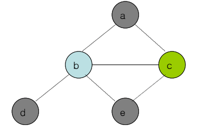
- 그리고 위처럼 해가 아예 없는 경우도 있음
- 이럴때는 레지스터에 넣지 않고 메모리로 내리는 Spilling을 진행한다
- Spilling을 할때는 새로운 Live range가 아주 짧은 새로운 Virtual Register를 도입해 명령을 재작성하는데 과정은 다음과 같음
- 일단 어떤 Virtual Register를 Spilling할건지 정함
- 그리고 해당 Virtual Register를 메모리의 한 공간과 연결한다
- 해당 Virtual Register가 등장하는 부분 바로 위에 할당된 메모리 공간에 있던 값을 임시 레지스터로 옮기는 코드를 추가하고
- 임시 레지스터를 이용해 Instruction을 수행하도록 코드를 바꾼다
- 예시를 보면 좀 더 이해가 될거임
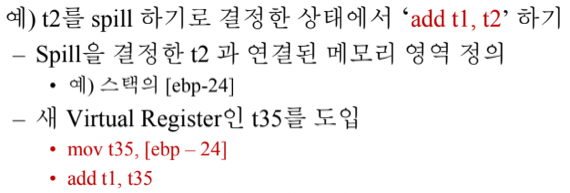
- 일단 t2를 Spilling하기로 정했고
- t2를 메모리의(Stack frame의) 한 공간인
[ebp - 24]와 연결해줌 - 그리고 임시 레지스터인 t35를 도입해 t2를 사용하는 Instruction직전에
mov t35, [ebp - 24]를 한다 - 마지막으로 t2대신 t35를 Instruction에서 사용하도록 바꿔줌
- Interference나는 Virtual register를 해결하기 위해 또 다른 Virtaul Register를 도입하는게 약간 이상하지만
- 보면 이렇게 새로 도입한 Virtual Register는 Live range가 한두줄밖에 안되기 때문에 아주 짧음 - 이렇게 바꾸고 Kempe’s Algorithm으로 색칠해보면 Interference가 거의 나지 않는다
Instruction Scheduling
- 일단 이것을 해야하는 이유는
- 어떤 Instruction이 끝나야 다음 Instruction이 실행되야 하는 경우가 아니라면 두개의 Instruction을 1사이클 차이로 실행시킬 수 있기 때문
- 따라서 어떤 Instruction을 실행시키기 위해 앞선 Instruction이 종료되는 것을 기다리느라 CPU 가 놀고있는 걸 Stall이라고 하는데
- 이러한 Stall 등의 비효율을 줄이기 위해 Instruction을 재배치 하는 것을 Instruction Scheduling이라고 함
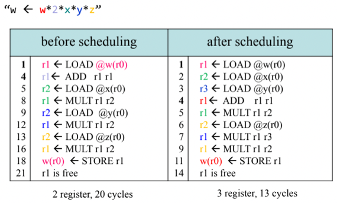
- 그래서 위의 예시를 보면
- 1, 5, 9, 13사이클에서 실행되는 LOAD의 경우 Dependency가 없기 때문에 바로 실행이 가능한데 중간중간에 Dependency가 있는 Instruction이 포함되어 있어 그만큼 지연되는 것을 볼 수 있음
- 따라서 왼쪽처럼 Dependency가 없는 몇개의 Instruction을 처음에 다 돌려놓음으로 Stall을 줄일 수 있더라
Chanllenges
- 근데 당연하게도 이건 쉬운일이 아님
- 일단 당연하게도 동일한 동작을 하는 코드로 바꿔야 되고
- 최적화하는 것이기 때문에 Wasting time을 줄여서 최종적으로 걸리는 시간이 줄어야 하고
- Register Spilling을 되도록이면 피해야 함 - Memory 접근은 비용이 큰 연산이기 때문
- Instruction을 옮겼을때 use-def의 길이가 길어져서 Life range가 늘어날 수 있기 때문에 Interference가 일어날 확률이 늘어남 - 이러한 위험부담을 항상 고려해야 한다
Scheduling의 종류
- Static Scheduling : 컴파일 타임에 스케줄링하는 것
- Local Basic Scheduling : 반복문이나 분기문이 없는 하나의 Block 내에서 스케줄링하는 것
- Loop Scheduling : 반복문이 들어간 상황에서 스케줄링하는 것
- Global Scheduling : 전체적으로 스케줄링하는 것
- Dynamic Scheduling : 런타임에 스케줄링하는 것
List Scheduling
- Local Basic Scheduling의 하나로 Instruction을 Heuristic을 이용해 Greedy하게 선택하는 방법
- 간단하게 설명하면 Dependency Graph(Precedence Graph)를 만들고 Topological sorting을 하되 선행노드가 없는애들중에 하나를 고를때는 Heuristic을 기준으로 Greedy하게 선택하는 방법
Dependency Graph(Precedence Graph) 만들기
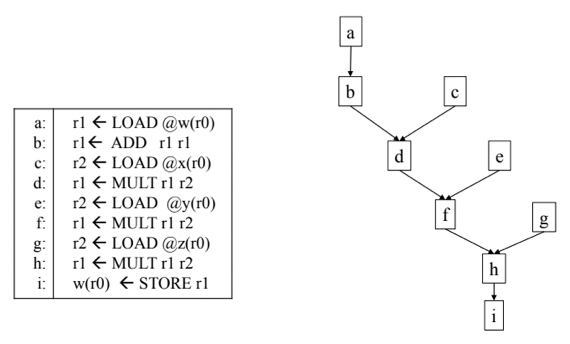
- 뭐 이거 그리는건 어렵지 않음
- 그냥 의존관계 고려해서 그려주면 된다
Heuristic Priority 산출
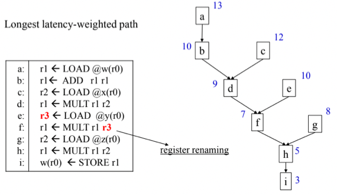
- List Scheduling을 할 때는 Latency를 Heuristic으로 둔다
- 이걸 어떻게 구하냐면 맨 마지막 Instruction부터 시작해 위로 올라가면서 각 Instruction에 걸리는 시간을 누적해주면 됨
- 위 예시를 보면서 해보자고
- 일단 마지막인 i를 할때는 이놈이 3이 걸리다고 가정했을때 Latency는 3이 됨
- 그리고 그 위의 h의 경우에는 이놈이 2가 걸린다고 가정하면 이놈을 하고 i까지 하려면 2 + 3으로 5이 걸린다 - 이게 Latency가 되는 것
- g의 경우에 3이 걸리고, f의 경우에 2가 걸린다면 각각의 경우에 i까지 마무으리하려면 h의 Latency인 5에다가 2, 3을 각각 누적해 f의 경우에는 7이 되고 g의 경우에는 8이 되는 것
- 이런식으로 Precedence Graph의 모든 노드에 대해 Latency를 기준으로 Heuristic을 구해준다
Ready-operation Priority Queue만들어서 진행
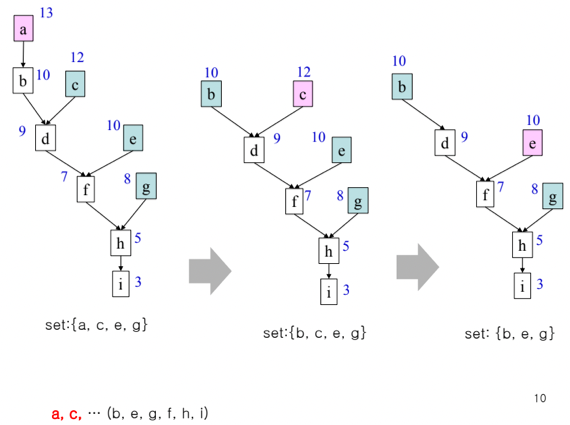
- 그래서 이제 바로 실행 가능한 Instruction들을 Heuristic을 기준으로 하는 Priority Queue에 넣고(얘를 Ready-operation Priority Queue라고 하드라) 하나씩 빼면서 정렬해주면 되는 것
- 위 예시를 보면
- 일단 {a, c, e, g}가 들어가게 될거임
- 제일 우선순위가 높은놈 고르면 당연히 a가 골라지겠지
- 그럼 그놈을 지우고 바로 실행 가능해진놈을 큐에 넣음 - b가 들어가고 {c, e, b, g}가 된다 - 우선순위가 같을때는 뭐가 먼저 오든 상관없음
- 그리고 c가 top에 있으니까 c을 빼고 실행가능해진놈을 넣음 - 아무것도 없으니까 바로 다음으로 진행
- 그 다음은 e가 top에 있으니까 e를 빼고 실행하능해진놈을 넣음 - 이번에도 실행가능해진놈은 아무것도 없음
- 이런식으로 계속 진행해서 Topological sorting을 하게 된다
기타 Optimization
- Optimization에는 Scheduling말고 딴게 더 있는데
- Architecture에서 지원해주는 다양한 기능을 이용한다던지
- 뭐 예를들면 1 더하는 기능을 inc라는 걸로 지원해서 1더할때는 add를 사용하는것보다 inc를 사용하는 것이 더 좋다거나 - 특수목적의 명령어
- jump address만을 위한 레지스터를 제공한다거나 - 특수목적의 레지스터
- 아니면 Register간 mov를 줄일수도 있다
- 레지스터간 mov는 어차피 같은값을 가지니까 기존의 레지스터를 계속 사용하는 식으로 mov를 제거
- 근데 이건 Live range가 늘어날 가능성이 있으므로 주의해야된다
- 아니면 중복된 LOAD를 제거할 수도 있음
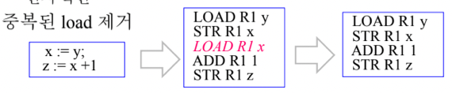
- 뭐 위처럼 store을 한 다음에는 r1에 여전히 x의 값이 남아있기 때문에 굳이 다시 load해주지 않고 바로 사용할 수 있다